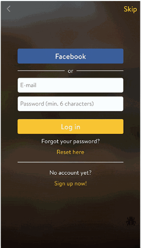
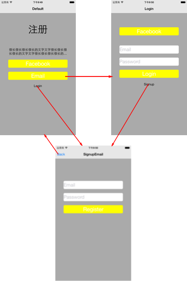
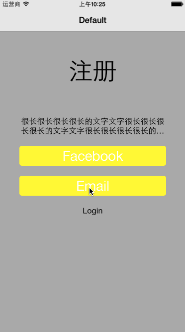

引子
在medium上看到一篇文章，关于自己App登录/注册相关页面的实现，具体的页面切换：

这种页面切换，按照之前的经验，会使用几个viewcontroller，通过navigationcontroller进行管理；同时会涉及页面间的传值——或protocol或block实现。现在，这个团队使用了tableview，这样就只需一个viewcontroller，即可实现。
我觉得很有意思，自己先想了想，和他们的思路差不多，不过也有没有考虑到的地方。下面，我们一步一步来实现它。
准备工作
原文是swift实现，这里用ObjC来实现，需要的准备：tableview，定义几个状态，拆分cell类型。
状态主要指当前页面是默认界面，邮箱登陆／注册界面，或是其它。这里为了简便，只做三种状态，定义如下：
typedef enum : NSUInteger {
ZZHTableStateDefault = 1,
ZZHTableStateSignupEmail,
ZZHTableStateLogin,
} ZZHTableState;
cell的拆分，这里根据实际的页面，以及页面间切换的动画，找到“最小”的cell。这里定义了：
- ZZHSpaceCell: 用于占位
- ZZHTitleCell: 用于显示大标题，如首页的“注册”字样
- ZZHDescriptionCell: 文字描述单元格
- ZZHButtonCell: 按钮单元格
- ZZHTextFieldCell: 输入文字单元格
为了便于说明，将简化的状态迁移图展示如下：

Default 页面，设置的cell依次为 Title, Description, Button, Button, Description.
Login 页面，设置的cell依次为 Space, Button, Space, TextField, TextField, Button, Description.
SignupEmail 页面，设置的cell依次为 Space, TextField, TextField, Button.
TableView的datasource和delegate
首先实现tableview需要实现几个协议：返回cell的协议、cell数量以及高度的协议。这里高度需要征对每一个cell给出具体的参数。
接下来，就是实现select协议，重点是厘清某个状态下，哪个cell可以点击，点击后进入哪个状态。当你提前设计好状态切换后，这些都是水到渠成的。
状态迁移
这部分的重点就是比较两种状态，找出哪些cell要delete，哪些要insert。这里以状态：Default->Login的迁移为例进行说明。通过比较，可以得出：
- 删除：0,1,3,4
- 插入：0,2,3,4,5,6
各位可以尝试一下，看一下效果。接着问题来了：对于每一种状态迁移，都需要通过hardcode的方式吗？这个问题的求解其实是最长公告序列的问题，通过比较前后状态的cell内容，自动计算出删/插的cell，这样，即便以后添加新的状态，也不用再修改这部分内容了。这里，需要提醒下的是，在状态更新的时候，除了删除/插入的动作，有可能还需要reload不变的cell，原因就不多说了。
最后，看一下demo效果：
